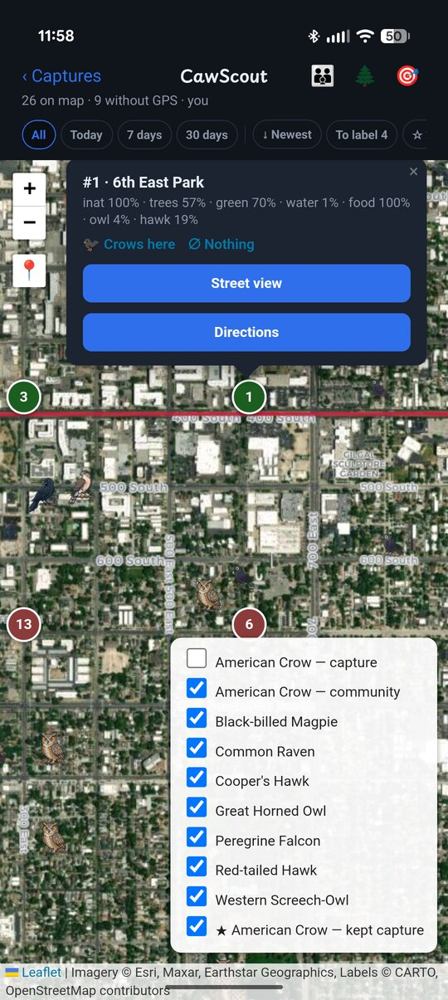

One backyard produces one family's calls. Finding the next family used to be
a random dawn walk, and the random walks kept coming home empty. CawScout
replaces them with a prior: a 250 m grid over the whole valley, scored on
where crows should be and ranked into a numbered target list on the app's
map.
The trees
Crows nest and roost high, so canopy is the loudest signal in the
score. A satellite canopy-height model reads every tree in the
valley at 1 m resolution; stands of 15 m and up, about
45,000 of them, go into the grid, joined by thousands of
individually-mapped street trees, each assigned its height from the
same model. The taller the stand, the harder it pulls on the cells
around it.
The greenery
Crows forage on open turf, so parks, cemeteries, golf courses and
grass come in from OpenStreetMap, nearly eight thousand features,
with water and human food (fast food, supermarkets, picnic sites)
as their own smaller signals. Each one radiates a few hundred
metres into the surrounding cells, because a crow near a park is a
crow the park explains.
The score
Every signal becomes a heat layer over the grid and they sum by
weight, canopy first, community crow sightings second, on purpose:
the satellite measures every block equally, while sightings pile up
wherever birders happen to walk. Predators then subtract, corrected
for how well-watched the ground is. Great Horned Owls, the top
predator of crow nests, cost the most. That penalty alone knocked
a raptor-patrolled university cluster out of the top five.
The map
Numbered targets over satellite imagery, alongside every capture's
pin and community sightings of crows and each predator species:
dated, photographed, toggleable per species. A target explains its
own score and offers street view and directions, and the header says
whether right now is even a good time to be out.

Target #1 open on the map: why it scored, how to get there, and the two
buttons a visit ends with. Owls and hawks drawn where others saw them.